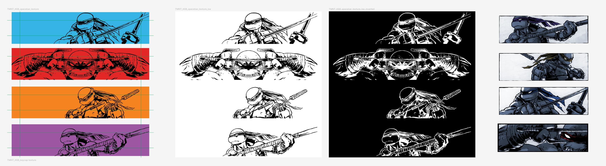
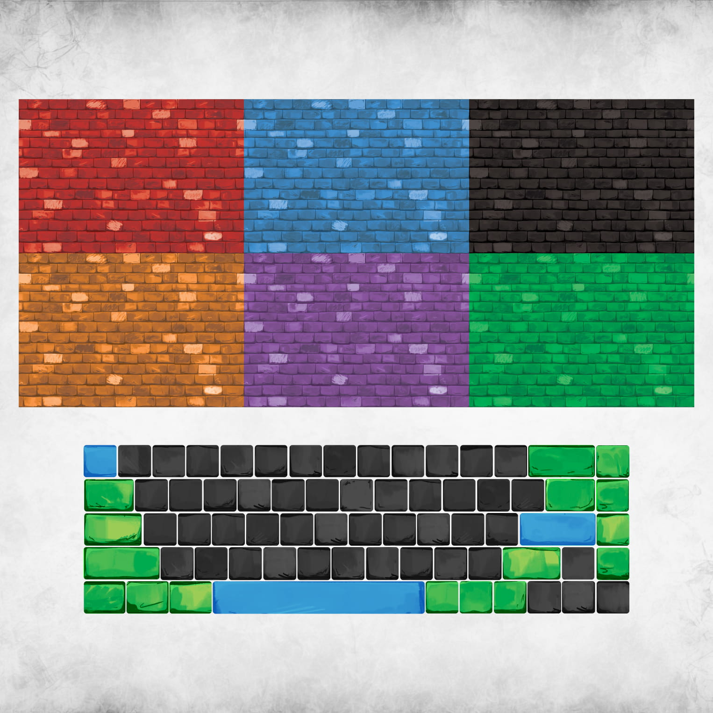
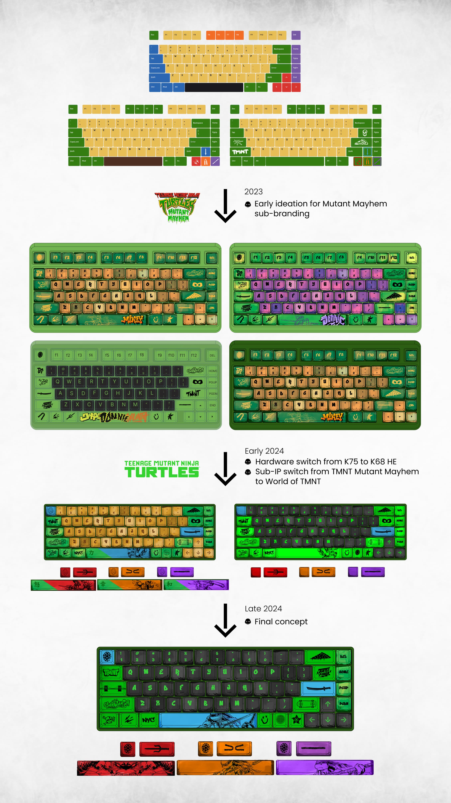
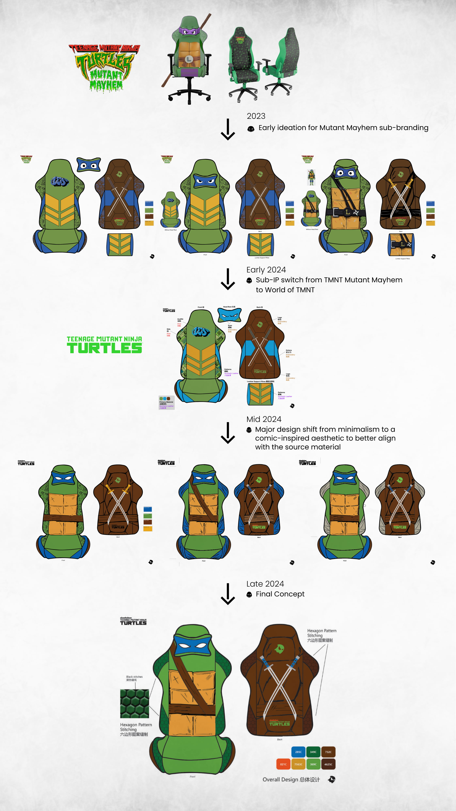
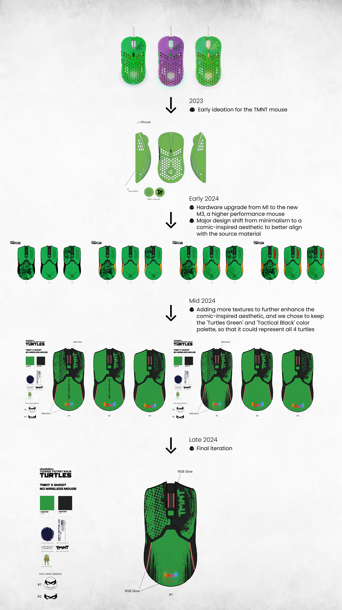
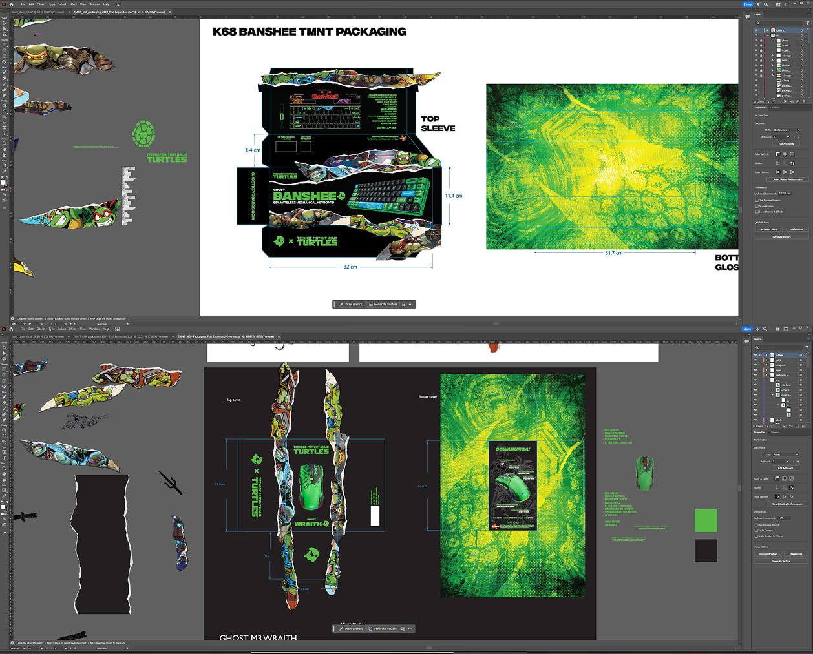
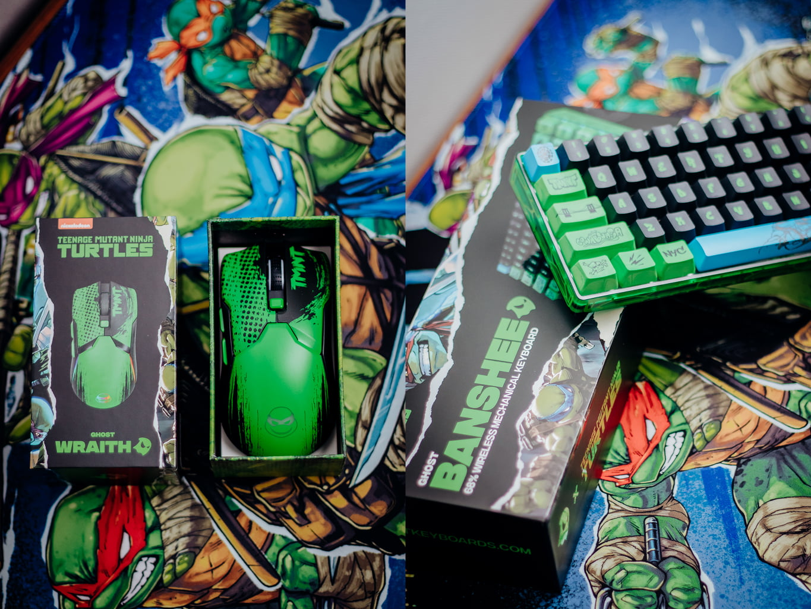

Summary
I led the end-to-end design and creative direction for the 2024 TMNT x Ghost collection. This was a full hardware ecosystem, including the Banshee K68 HE keyboard, Wraith M3 mouse, and Sentinel Gaming Chair. Over a year-long development cycle, I owned the product’s evolution from the first sketch to the final production-ready units.This wasn’t a linear process. I managed constant design iterations as hardware specs shifted and navigated the high-stakes approval process of a major IP like Paramount. By building a modular, 3D-first design system, I bridged the gap between technical product design and high-performance marketing. This workflow allowed us to iterate fast and generate a massive library of assets for multivariate testing. Every product skin, packaging die-line, and 3D render was built to hit the mark with both hardcore collectors and competitive gamers.
High-Fidelity 3D Renders & Marketing Assets
.jpg)
.jpg)
.jpg)
.jpg)
.jpg)
.jpg)
.jpg)
{kind=link}
3D Animation Promo Video
The Design Strategy: Tactical Nostalgia

Cultural & IP Research: Digging into actual Ninja and Samurai standard designs, flag motifs, and historical Japanese characters. This deep dive allowed me to ground the 'Tactical Nostalgia' aesthetic, ensuring the color-blocking and graphic patterns (specifically the character portrait keys and the historical flag-inspired accents) felt authentic to both the TMNT universe and premium hardware aesthetics. [Figma]
The Challenge
The TMNT franchise is a massive global IP. The challenge was to translate a "cartoon" aesthetic into the premium gaming peripherals market. This required a delicate balance: maintaining the integrity of Paramount’s official assets while adapting them to complex, non-traditional 3D surfaces like a 65% keyboard chassis and an ergonomic gaming mouse.
The Objective
Create a cohesive product ecosystem for the "Enthusiast Collector." This wasn't just a licensed product; it was a high-performance tool that needed to feel "official" at first glance.
IP Stewardship & Visual Integration


IP Stewardship: Translating Paramount’s official 4-color and spot-color callouts into a premium gaming aesthetic. Every character mask, 'ooze' glow, and hardware accent was matched to these brand standards to ensure absolute IP compliance across the entire collection
{kind=link}

Re-engineering 2D comic assets for 3D production. I adapted these signature character illustrations from a 2D comic asset into high-contrast technical textures, ensuring the artwork remained sharp and impactful when wrapped across the K68 spacebars.
{kind=link}

To ground the collection in the grit of the TMNT universe, I integrated stylized brick textures directly from the Paramount asset library. By using these as a base layer for the keycaps and hardware accents, I established a tactile, 'lived-in' feel. This ensured that every character's unique colorway, from 'Raph Red' to 'Donnie Purple'. It felt like an official extension of the comic world, not just a standard plastic peripheral.
The Solution
I went with a "Tactical Turtle" look. We focused on textures like shell patterns, distressed metal, and "ooze" glows instead of just slapping logos on the products. To keep the setup from looking cluttered, I used a strict color hierarchy: 70% gritty neutrals for the hardware bodies, 20% character accents for the masks, and 10% "ooze" for the RGB lighting.

Visual Identity Development: Using Figma to map out the technical graphic placement for the M3 mouse. This phase was critical for establishing the visual hierarchy between the 'Tactical Black' body and the character-specific accents before moving into the 3D texturing phase.
The 12-Month Iteration Cycle
{kind=link}

Visual Evolution: A 12-month timeline showing the pivot from initial 2023 'Mutant Mayhem' concepts on K75 hardware to the final 2024 'World of TMNT' collection on the K68 HE. This demonstrates the transition from rough color blocking to final, IP-compliant production art across shifting hardware specifications.
{kind=link}

Chair Design Evolution: A timeline of the structural and visual iterations for the Sentinel Series. This shows the strategic pivot from a minimalist concept in early 2024 to a high-detail, comic-aligned aesthetic by late 2024, ensuring the final product captured the gritty texture and energy of the TMNT universe.
{kind=link}

Mouse Design Evolution: A timeline for the M3 mouse iterations, showcasing the tactical application of the 'Turtles Green' and 'Tactical Black' aesthetic. By utilizing modular texture assets in our 3D pipeline, we iterated across multiple hardware revisions (M1 to M3) and finalized a design that unified all four character identities through shared lighting and comic-inspired details.
Because this project spanned a full year of development, we navigated several major hardware and branding pivots across the entire product line. Initially, the collection was conceptualized around the TMNT: Mutant Mayhem film aesthetic. As the project evolved into 2024, I spearheaded the transition to the World of TMNT branding and adapted the designs to new hardware specifications, including the move from the K75 to the K68 HE keyboard and the M1 to the M3 mouse.
I used a 3D pipeline in Maya to "fail fast." By visualizing these changes instantly across the keyboard, mouse, and chair, we identified graphic layout issues and ergonomic conflicts months before the first physical prototypes arrived. For example, we were able to perfectly align the character mask graphics across varying keycap heights and chair stitching patterns in digital space. This proactive approach saved the team significant time and cost during the R&D phase and ensured a cohesive look across the entire 4-piece ecosystem.
3D Visualization & Technical Pipeline
I started with raw manufacturer CAD files and optimized them for high-end rendering. This involved clean retopology and UV mapping to ensure Paramount’s graphics, like the ripped paper motifs, wrapped perfectly around the hardware’s curves without distortion.
For the chair, I modified the Throttle Series model (which I originally built from scratch for Clutch Chairz) to create the new Sentinel Series base. I then textured the TMNT-themed look through Substance 3D, developing custom PBR materials to highlight the contrast between the leather grain and the hexagonal shell patterns. The final 3D animation served as the hero asset for the launch, proving we could showcase technical hardware features through cinematic motion.
Behind the scenes in Maya: Animating the TMNT Sentinel Series Gaming Chair promo video


Behind the scenes in Maya: TMNT keyboard, mouse & deskpad scene setup

Behind the scenes in Maya: TMNT gamer room scene setup
Scalability & Creative Testing
The Production Engine
Working with four distinct characters required a system that could scale. I built the assets to be modular. We could swap between Leonardo, Donatello, Michelangelo, and Raphael instantly while keeping lighting and camera angles identical.
This gave the marketing team a massive advantage. We could A/B test which character or environment drove the most engagement without needing four separate photoshoots. It was a high-efficiency production model that allowed us to create 4x the content with a fraction of the traditional effort.
.jpg?v=2.jpg)

Localization & Internationalization
Beyond the creative variables, I managed the international asset production for a global launch. I oversaw the localization for 10+ different regions, translating the campaign into multiple languages, including French, Spanish, Swedish, and Polish, while maintaining perfect brand consistency. This high-efficiency model allowed the marketing team to be data-driven at a global scale, generating 4x the content with a fraction of the traditional effort.

Multilingual poster variations designed for a coordinated global launch
Packaging & The Final Result
{kind=link}

{kind=link}

Re-engineering a technical layout to create an emotional unboxing experience. It was my job to make sure the colors and graphics I saw in my software didn't get lost or distorted once they were printed on real cardboard and folded into the final product packaging. To ensure we honored the official brand history and delighted the 'Enthusiast Collector,' I maintained the 'ripped paper' asset from the IP's packaging precedent. This allowed us to build a seamless unboxing moment that didn’t just reveal new gear, but unboxed decades of shared TMNT history. [Illustrator]
The packaging needed to be an emotional extension of the hardware's "Tactical Turtle" identity. To do this, I led a core creative direction: Unboxing a Breakout. I worked with the creative team to intentionally utilize Paramount's signature "ripped paper" assets, positioning them to make it feel like the Turtles weren't just on the box, they were actively breaking out of it. By leveraging this existing IP asset with new, complex gradients and ooze textures, we honored official brand history while still pushing the boundaries of what a modern, premium peripheral collection could look like on a shelf.
From that initial "breakout" concept to the final folded product, the result was a seamless, collector-grade unboxing moment. This final realized collection proves that technical execution and deep-dive IP strategy don't have to be separate. By obsessing over the details, from precise asset alignment in Illustrator to authentic asset consistency, we created a product ecosystem that truly feels "official", one that can immediately unlock decades of shared memory for every TMNT fan who opens it.

Actual Product Photo vs. 3D Render: TMNT Full Set

Actual Product Photo vs. 3D Render: TMNT Sentinel Series Gaming Chair
Conclusion and Takeaway
The TMNT x Ghost collection was more than a design exercise. It was a test of how a consistent brand narrative can survive a complex, year-long manufacturing process. By owning the creative direction from the first concept to the final rendered ad, I ensured that the product’s identity never got lost in translation between engineering pivots and licensing requirements.
Key Learnings
- The 3D Pipeline is a Strategic Asset: Moving to a 3D-first workflow didn't just give us better visuals; it acted as a risk-mitigation tool. We identified design flaws and ergonomic issues in the digital space, saving us from costly mistakes in physical production.
- Systems Over One-Offs: Instead of creating one-off images for each turtle, I built a modular 3D system. This allowed us to swap characters and colors instantly within the same scene. By keeping the lighting and camera angles identical across all four characters, the marketing team could accurately test which turtle performed best with our audience. We weren't just making pretty pictures; we were building a library of assets that could be updated and reused as fast as the market changed.
- IP Stewardship Requires Flexibility: Working with a major licensor like Paramount taught me how to be a "brand guardian." It’s about knowing when to stick to the style guide and when to adapt those elements creatively to fit a functional hardware product.
The result was a successful launch that bridged the gap between nostalgia and premium performance gear. It proved that when design, strategy, and 3D visualization work together, we can build products that aren't just visually striking, but built to perform in the market. The 4-piece collection was a commercial success, selling out quickly and requiring several restocks to keep up with the demand since the initial launch.